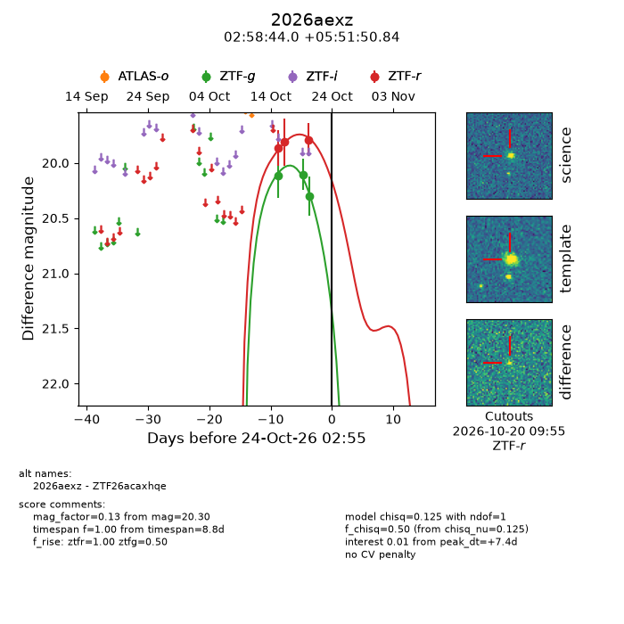
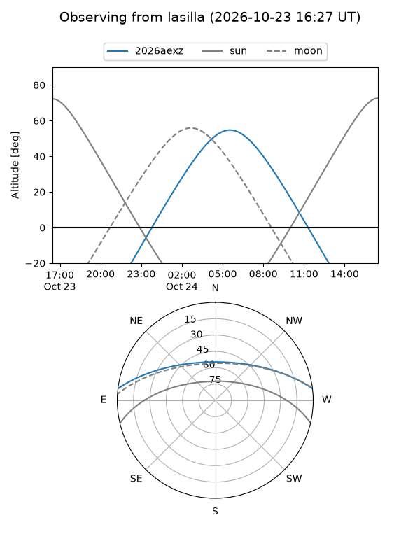
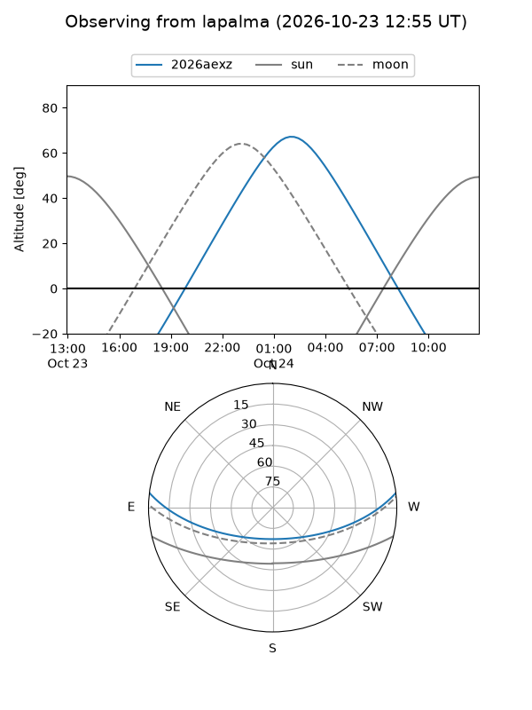
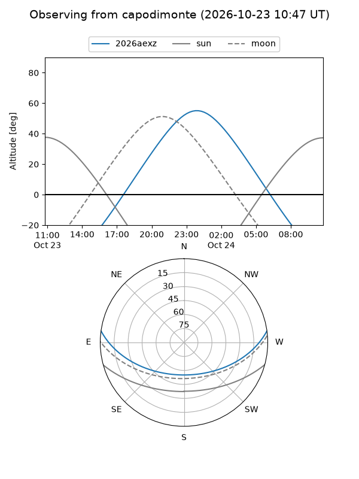
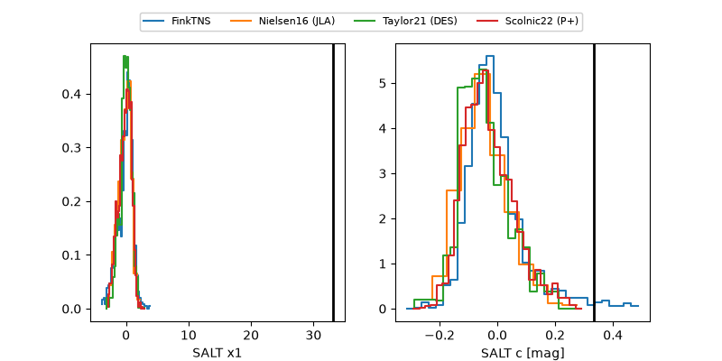

2026aexz
Target 2026aexz at 2026-10-24 02:57
Aliases and brokers:
FINK-ZTF: ztf.fink-portal.org/ZTF26acaxhqe
Lasair-ZTF: lasair-ztf.lsst.ac.uk/objects/ZTF26acaxhqe
ALeRCE-ZTF: alerce.online/object/ZTF26acaxhqe
YSE-PZ: ziggy.ucolick.org/yse/transient_detail/2026aexz
TNS name: wis-tns.org/object/2026aexz
Direct TNS query: direct search
alt names
ZTF26acaxhqe (ztf,fink_ztf)
2026aexz (tns,yse)
Coordinates:
equatorial (ra, dec) = 44.6834,+5.86412
equatorial (HMS+DMS) = 02:58:44.02,+05:51:50.84
galactic (l, b) = (170.6897,-44.88237)
Flags:
peak dt: +7.4
Photometry:
last ztfg=20.30, ztfr=19.79
3 ztfg, 3 ztfr detections
Lightcurve

Visibility



Additional plots
